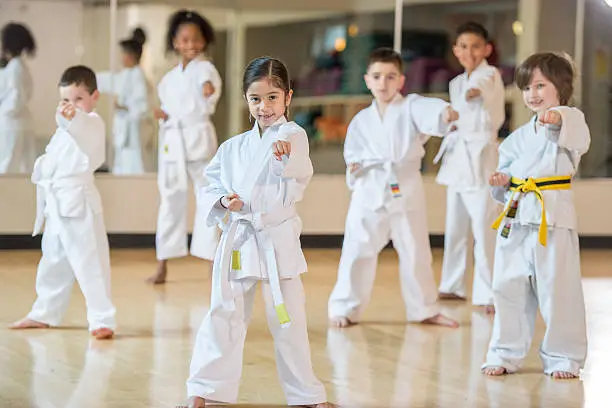

Parvularia
Aquí empieza todo. Aprender a través del juego, el arte y la curiosidad, en un ambiente seguro donde cada niño se siente acompañado.
- Kinder 4
- Kinder 5
- Preparatoria
Conoce los niveles que ofrece el colegio

Aquí empieza todo. Aprender a través del juego, el arte y la curiosidad, en un ambiente seguro donde cada niño se siente acompañado.

Construimos bases sólidas en matemática, lenguaje, ciencias y valores, sin dejar de lado el deporte y la creatividad.

Preparamos a los jóvenes para la universidad y para el mundo laboral, con orientación vocacional y proyectos reales.
Porque aprender también es moverse, crear y descubrir. Estas son algunas de las actividades que complementan la formación académica.

Ajedrez, artes marciales y fútbol para desarrollar disciplina y trabajo en equipo.

Música, danza y artes plásticas para expresar lo que cada uno lleva dentro.

Refuerzo de inglés en todos los niveles, con práctica real de conversación.

Computación y robótica para preparar a los estudiantes del futuro.